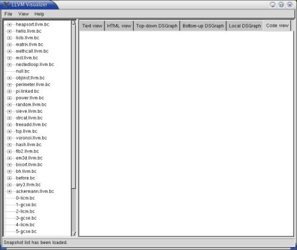
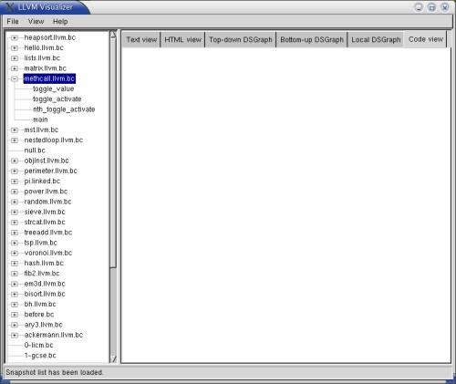
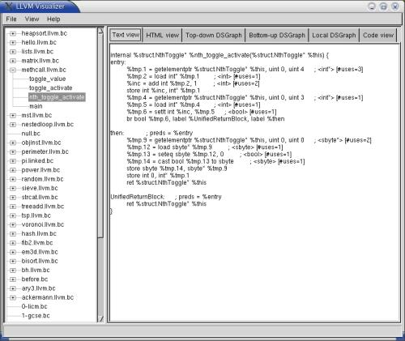
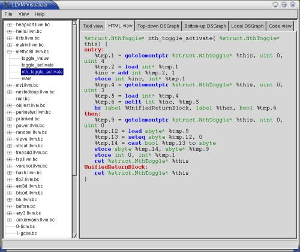
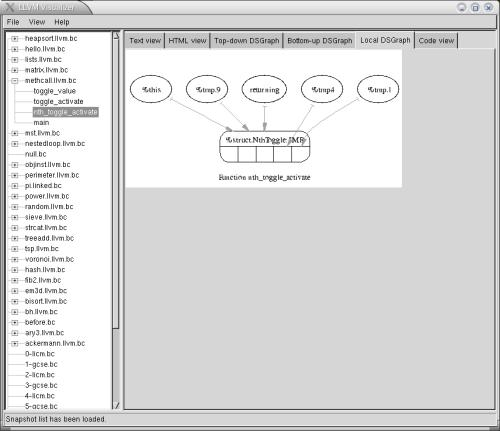
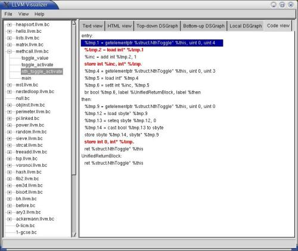
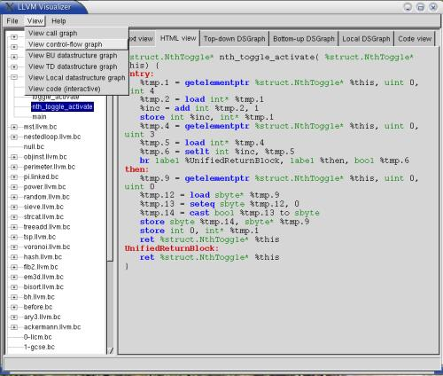
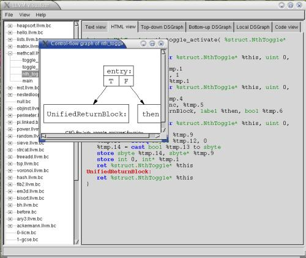
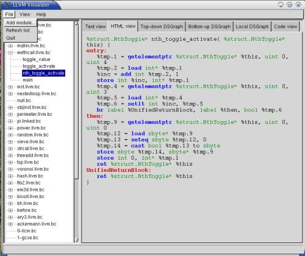

Once you have unpacked and compiled LLVM, download the LLVM Visualization Tool sources and unpack them in the projects subdirectory of your LLVM source tree.
% cd llvm/projects
% tar xzvf llvm-tv.tgz
% cd llvm-tv
You must then compile the LLVM Visualization Tool.
% ./configure --with-llvmsrc=[path] --with-llvmobj=[path]
If you're building in llvm/projects/llvm-tv, then you don't need to specify these --with options.
% cd lib/wxwindows
% ./configure --enable-debug --prefix=`pwd`
Make absolutely sure that wxWindows's configure script detects the same C++ compiler that you used to compile LLVM. Otherwise, you may get weird link errors when trying to link the llvm-tv tool.
% cd ../..
% gmake
Note: opt-snap and llvm-tv.exe may be found in the tools/Debug directory.
Using the LLVM tool 'opt', one runs transformations on an LLVM Bytecode file. Please see the man page on opt for details on what transformations are available.
In order to acquire snapshots after a transformation or a series of transformations have been applied, you use the 'opt-snap' tool. You simply place the option '-snapshot' after specifying your transformation options. You may ask for a snapshot any number of times.
Here is an example of using opt to acquire snapshots. We will run two optimizations (loop-invariant code motion and global common-subexpression elimination) on the program whose LLVM bytecode is in the file bytecode-file.bc, and take a snapshot after each pass completes:
% opt-snap -debug -licm -snapshot -gcse -snapshot < bytecode-file.bc > /dev/null
All snapshots are placed in the directory /tmp/llvm-tv-username/snapshots, where username is your login name.
Begin by starting up the LLVM Visualization tool GUI. Make sure llvm-tv.exe is in your PATH, then type:
% llvm-tv.exe
This should pop up a window such as the following:

Notice that all the snapshots are listed in the tree view structure on the left side of the frame. Compilation units in LLVM have a simple, hierarchical structure: a Module contains Functions, which contain BasicBlocks, which contain Instructions. The tree view will show you functions within the snapshot you are viewing.
From this screen shot, you can see that we have expanded a module revealing that it has several functions within it.
To the right of the tree view is a tabbed pane that allows you to easily browse different views of the snapshot.
TextView:The text view is a direct disassembly of the Module, showing the pointer size of the target architecture for which it was compiled, endianness, the user-defined types present in the module, global variables, and all function definitions.

HTMLView:
The HTML view is a syntax-highlighted view with LLVM keywords in blue, types in green, and BasicBlock names in red. For brevity, the Module view does not include the types and the functions are given as prototypes. External functions, for which the Module has no code, are prepended with a `declare' keyword. Other functions' code can be viewed by clicking on the appropriate node in the tree list.

DSGraph Views:
LLVM has a powerful alias analysis framework and here we are showcasing its novel Data Structure Analysis (DSA) algorithm. It has 3 components: the Bottom-Up DSGraph, Top-down DSGraph, and Local DSGraph. These graphs show points-to results analysis for global variables and other pointers in a program. Here we see the results of a local data-structure analysis run:

CodeView:
Because LLVM is in SSA (Static Single Assignment) form, any use of a variable must be preceded by exactly one definition. We can thus form def-use chains which connect definitions of variables to their uses. The CodeView enables one to click on any value and see where the uses of the variable occur, allowing a visual way to inspect code. As a side effect, clicking on a BasicBlock entry shows all users of the BasicBlock, which are branches that have the BasicBlock as a target, thus showing how many incoming control-flow edges a block has.

There are also more views under the View menu. Selecting one of these views will open up a new window with that view in it. There are two new views that we have not seen before: Call Graph view and Control Flow Graph view.

Call Graph:
The Call Graph shows the callers and callees of each function in the module. A graph of functions, here each node represents a function and an arrow from node A to node B means that function A calls function B at least once in its code.
Control Flow Graph:The control flow graph displays graphically the control flow of the function, identifying each basic block as a node and labeling all branches between blocks as arrows.

Additionally, you can use the File menu to add more snapshots to the visualizer.

Add Module:
This will add a given Module to the list of snapshots without having to run opt-snap to deposit it into the snapshot collection. This is useful if you want to compare different programs, instead of looking at multiple views of the same program.
Refresh:This option will re-read the snapshot collection directory to see if any new Modules have been added manually by the user (by copying directly through the filesystem).
A neat feature of the LLVM Visualization tool is that the GUI will automatically refresh the snapshot listing when opt-snap signals that a new snapshot has been generated. This is primarily useful for long-running optimizations.